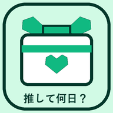

エメラルドグリーンのアイコンで追加
iPhone / iPad
- Safariでこのページを開く
- 共有ボタンを押す
- 「ホーム画面に追加」を押す
Android
- Chromeのメニューを開く
- 「アプリをインストール」または「ホーム画面に追加」を押す
色を変えるときは、今のホーム画面の入口を削除し、新しい色のページから追加し直してください。入口を削除しても、アプリ内の名前・写真・予定は消えません。「保存データをすべて削除」とは別の操作です。端末やブラウザによって表示名が少し違うことがあります。
アプリにもどる